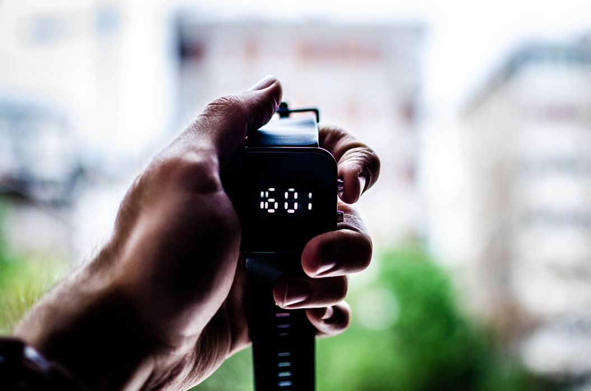

Hacker News, But Better
Y Combinators "Hacker News" is a great source of news and information, but its design is. . . well, dated. Hacked News is designed to fix that problem, with a responsive and modern look that will be a joy to use on all your devices, no matter the screen size.
News for Programmers
At our core, Hacked News is still providing you access to all the latest and greatest news about programming and technology. With the Hacked News web app, you don't have to give up on either a modern design, or the most current and important news that affects you.

Save Time
But it's not all about aesthetics, Hacked News's design is also more functional and efficent. Hacked News's improved readablity will save you time finding the information you need, and our default view showing you just the top 20 stories ensures you aren't bogged down with less important headlines.
